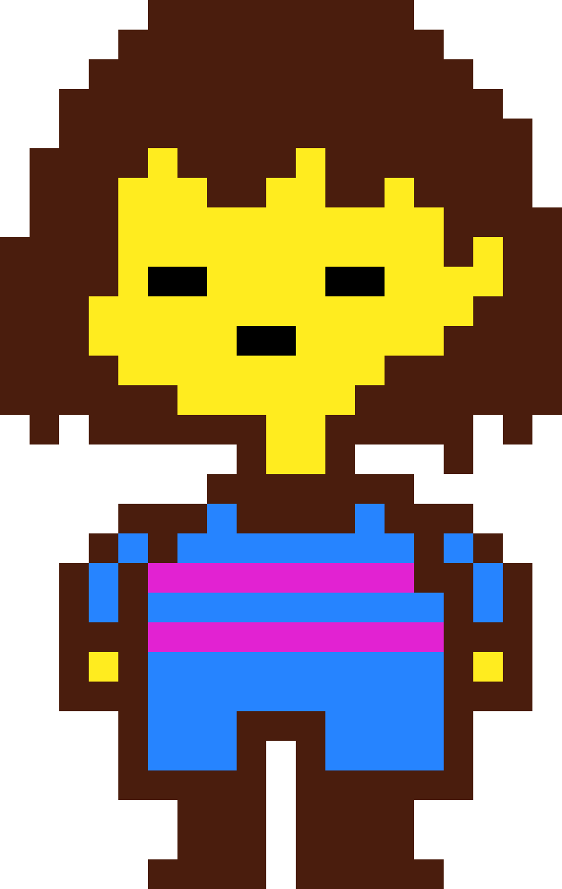
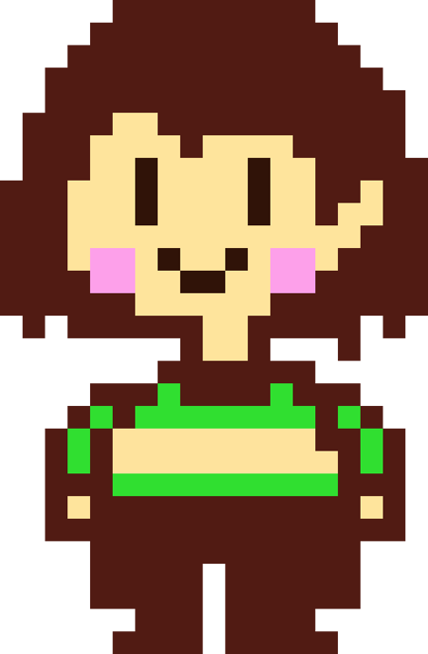
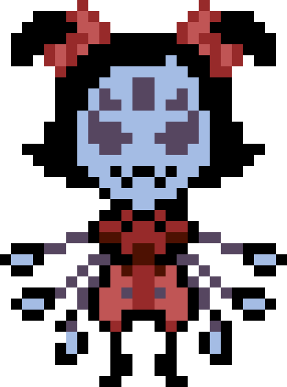
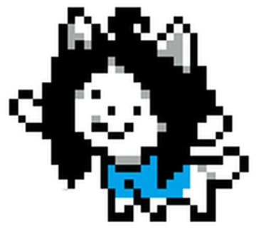
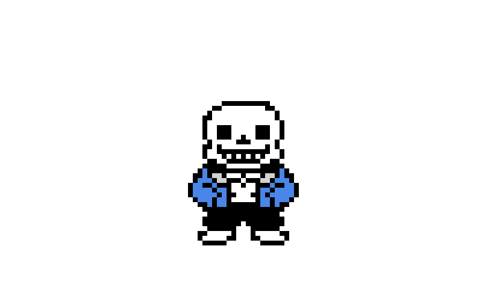
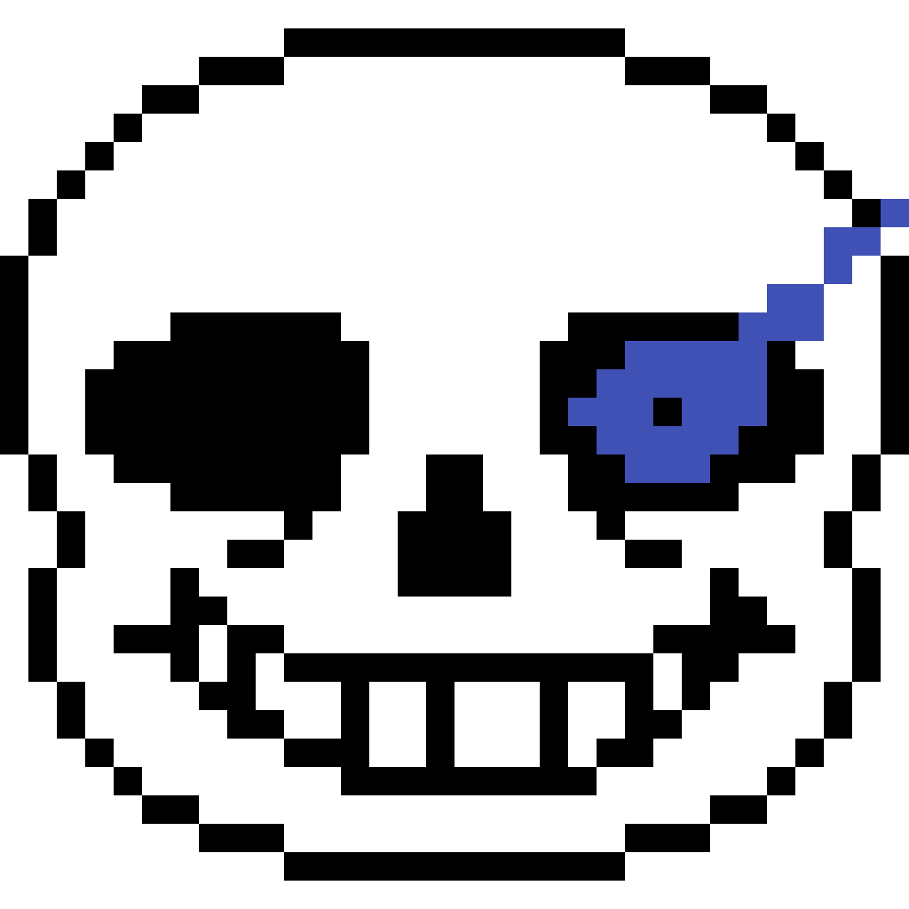

Undertale é uma inspiração, e por isso, apresento uma tabela com os meu personagens favoritos.
| Personagem | Sprite | Colocação |
|---|---|---|
| Frisk |  | 1º |
| Chara |  | 2º |
| Muffet |  | 3º |
| Temmie |  | 4º |
| Sans |  | 5º |
Uma dica caso for jogar o jogo: não seja uma má pessoa,a não ser que queira ter um tempo ruim. 